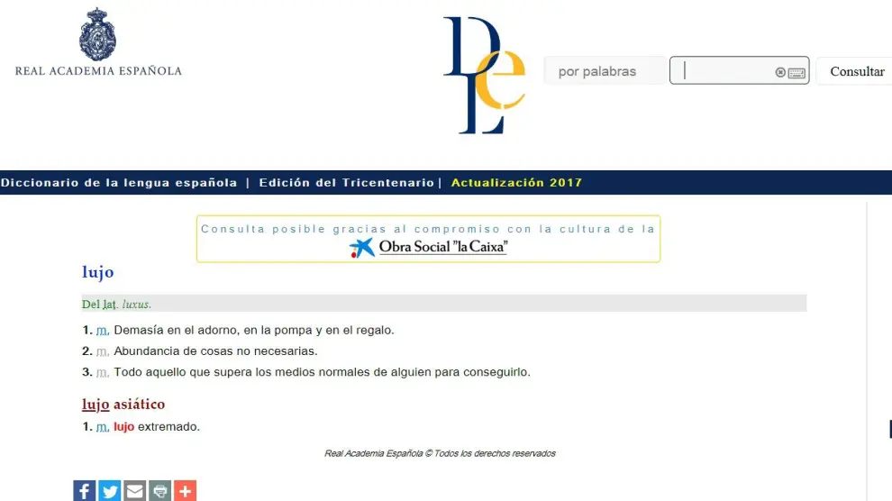
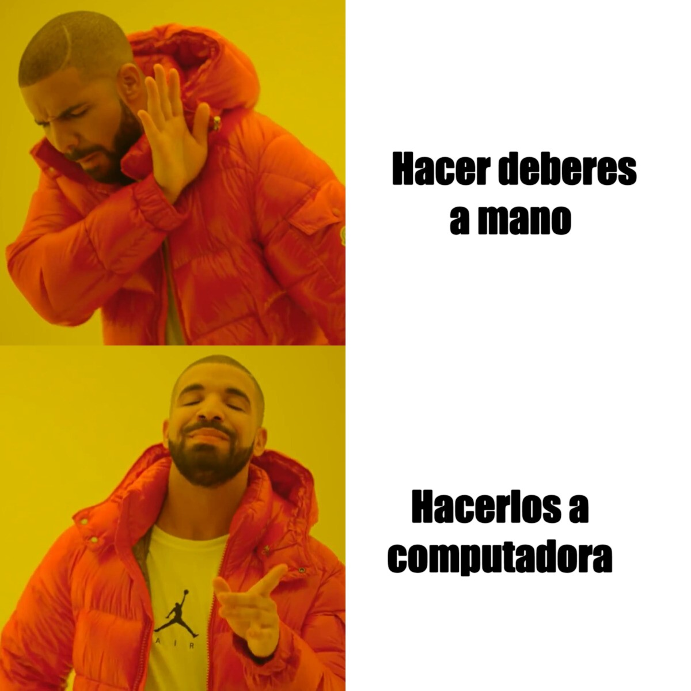

Posesión del Consejo Estudiantil 2024-2025
La Unidad Educativa Fiscal 24 de Mayo celebró con gran entusiasmo la posesión del Consejo Estudiantil 2024-2025. Este acto reunió a estudiantes, docentes, padres de familia y autoridades, quienes presenciaron el compromiso de los nuevos líderes para representar a su comunidad educativa.
Durante la ceremonia, se compartieron reflexiones inspiradoras que resaltaron la importancia de la responsabilidad, el servicio y la disciplina en el liderazgo. También se disfrutó de intervenciones artísticas que demostraron el talento y la creatividad de nuestros estudiantes.
El evento reafirmó valores fundamentales como la unión, perseverancia, el esfuerzo y el trabajo en equipo, pilares esenciales para fortalecer a la comunidad educativa.
Felicitamos al nuevo Consejo Estudiantil y confiamos plenamente en que su gestión será un ejemplo de dedicación y compromiso. Estamos seguros de que marcarán una diferencia positiva en nuestra institución. ¡Muchos éxitos en este nuevo desafío!
Para más información, visita la página oficial en Facebook: UEF 24 De Mayo Oficial.
¿Cómo buscar en los diccionarios virtuales?
Publicado el :
Los diccionarios son herramientas fundamentales en la vida de los estudiantes, no solo para entender palabras desconocidas, sino también como reflejo de la historia y la cultura de los pueblos. Su historia es extensa y se remonta a la Edad Media, con obras destacadas como el Tesoro de la lengua castellana de Covarrubias, el Diccionario de Autoridades de la RAE, el Diccionario ideológico de Casares y el Diccionario de uso de María Moliner. En la era digital, los diccionarios electrónicos han potenciado su versatilidad. Por ejemplo, el DRAE (2001) permite búsquedas inversas para encontrar rimas o patrones, identificar palabras según su origen etimológico o área de conocimiento, como "cacique" (caribe) o términos biológicos como "necrosis". El diccionario de Moliner destaca por ofrecer sinónimos y búsqueda de anagramas, como "amor" que genera "Roma" o "ramo".

Uno de los diccionarios más confiables es el Diccionario de la Real Academia Española (RAE). Visítalo para realizar consultas rápidas y precisas.
Diferencias entre bibliotecas digitales y físicas.
Publicado el:
Las bibliotecas digitales y físicas tienen diferencias significativas en:
Acceso:
- Digitales: Se puede acceder desde cualquier lugar con conexión a internet, en cualquier momento.
- Físicas: Requieren que los usuarios se desplacen al edificio y respeten horarios establecidos.
Formato:
- Digitales: Ofrecen recursos en formato electrónico que pueden descargarse o visualizarse en línea.
- Físicas: Albergan libros, revistas, mapas y otros materiales tangibles.
Espacio físico:
- Digitales: No ocupan espacio físico, siendo accesibles desde dispositivos electrónicos.
- Físicas: Necesitan áreas específicas para almacenarlos.
Disponibilidad de copias:
- Digitales: Varias personas pueden acceder al mismo recurso simultáneamente.
- Físicas: Generalmente solo hay un número limitado de copias disponibles.
Preservación:
- Digitales: Riesgo de obsolescencia tecnológica, pero los archivos pueden respaldarse fácilmente.
- Físicas: Son vulnerables a daños físicos, pero pueden durar siglos si se conservan adecuadamente.

Puedes ingresar a la siguiente página para más información: Biblioteca Virtual Miguel de Cervantes.
Publicidad y Entretenimiento
